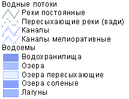
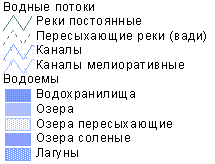

Гумилев Л.Н., Кузнецов Б.И. Две традиции древнетибетской картографии
Карта 4. Интерпретация древнетибетской карты на современной основе
 |
| Условные обозначения
|
 
Комментарии
Прокомментируем отмеченные на карте названия.
1. Bar-po-so-brgyad - Пасаргады. Достоверное описание этого города было сделано спутниками Александра Македонского, вступившего в древнюю персидскую столицу без боя. Историк Аристобул сообщает, что там располагалась гробница Кира Великого, представлявшая небольшую башню, скрытую в густой чаще деревьев: внизу башня была массивной, а наверху под крышей находился склеп с очень узким входом. Страбон приводит еще два различающихся описания этой гробницы, к его времени разрушенной. Историк Онексерит, сопровождавший Александра в походе, утверждает, что башня была десятиэтажной, а Арист Саламинский, писатель более поздний, указывает, что она была большой и только двухэтажной. Эти противоречия устраняются с помощью нашей карты. В центре ее изображена именно эта гробница, и видно, что в ней было десять этажей, которые отчетливо показаны чертежником. Кроме того, тибетская надпись выше заглавия является легендой именно к этой детали карты. Там перечислены следующие достопримечательности гробницы: 1 ) гора свастики, девятиэтажная; 2) хрустальные столбы с надписями ; 3) сад свастики; 4) сад колеса, или круглый; 5) лотосовый сад, видимо, с прудом и водяными цветами; 6) драгоценный сад. Совпадение тибетского чертежа с эллинскими описаниями снимает возможное сомнение в древности и достоверности карты, а также в правильности нашего отождествления исходной точки исследования.
2. Bde-ba-rang-grub - место, расположенное немного восточнее Пасаргад. По-видимому, это смысловой перевод: "блаженство (покой) само создается", хотя первый слог совпадает с персидским словом "даб" - "пышность, великолепие". Очевидно, показаны дачные места персидских царей, память о которых еще хранилась во время македонского и парфянского господства.
3. Sham-po-lha-rtse - слово "шампо" значит "сириец", поэтому возможный перевод этого названия "сирийская небесная (божественная) вершина". Очевидно, это святилище сирийских божеств для сирийцев, обслуживавших царский двор, а может быть, поселившихся в Иране при первых Селевкидах.
4. Bde-ba-rang-grub (см. 2).
5. Kho-ma-ne-chung - Карамания, которая, согласно Страбону, "└.обширная область и во внутренней части страны простирается между Гедросией и Персидой, отклоняясь, впрочем, дальше Гедросии на север". Это последнее обстоятельство отмечено на тибетской карте, что делает ее более точной, нежели современные исторические атласы, в которых Карамания помещена прямо на восток от Персиды. Впрочем, на карте походов Александра, приложенной к прекрасному переводу Арриана "Походы Александра", выполненного М.Е. Сергеенко, показан город Кармана с той же локализацией, что и на нашей карте.
6. Rnam-dag-dkar-po - ?
7. 'Khri-smon-rgyal-bshad. Судя по локализации и слову "царский", это развалины Персеполя, разрушенного Александром из мести за сожжение Афин Ксерксом. Персидское название города не сохранилось, а описание его развалин см. у В. Бартольда, локализовавшего Персеполь в окрестностях современного Истахра, вблизи от гробниц персидских царей, ныне называемых Накш-и-Рустем.
8. Thags(?)-me-ja-'nyung - ?
9. Chad-med-byang-chub. Можно перевести как "Непрерывная чистота".
10. 'Dul-khrims-gling в переводе "Страна законов, которые управляют", т.е. Персида, откуда велось управление империей Ахеменидов, а законы персидской монархии были переняты парфянами.
11. Dga-ldan-gling - "Страна, обладающая радостью", или "Райская страна".
12. Gyung-drung-bkod-gling ("Страна, в которой упорядочивают свастику (символ солнца)"). По-видимому, одно из главных святилищ Митры, древнего иранского божества Солнца, культ которого проник в Тибет под названием "религия бон".
13. Rin-chen-spungs-pa - страна "Драгоценный Пун".
14. Rm-chen-'gram-gling - "Страна Драгоценный берег".
15. Gnod-sbyin-nor-gling - "Богатая скотом страна демонов-вредителей". Вероятнее всего, что это не название, а характеристика страны Парфии, расположенной севернее Карамании. "Вредными демонами" иранцы называли народы Турана (скотоводческие племена), в том числе и парфян.
16. Chad-med-byams-gling - западная окраина Мидии (См. 27).
Здесь необходимо отметить, что тибетский географ некоторые крупные страны отмечает на карте по нескольку раз. Смысл этого в том, что один раз отмечается столица, другой территория, занятая народом, третий - покоренные и присоединенные области. Этим объясняются некоторые как бы смещения топонимов, но это же позволяет уяснить характер сведений, попавших в Тибет, и время составления карты. Мидия, как культурнейшая из областей Ирана, сохраняла свое значение и после потери самостоятельности в 550 г. до н.э., находясь в составе Ахеменидской, Селевкидской и Парфянской монархий. Поэтому она попала на тибетскую карту.
17. Dge-rgyas-yon-tan - Гиркания, одна из провинций древнего Ирана.
18. Mi-gYo-bsam-gtan. Возможно, греческий вариант названия Двуречья, т.е. Месопотамии, поскольку далее, к западу, расположены "Страна халдеев" (см. 45) и "Страна, в которой собраны жрецы", т.е. Вавилон (см. 30).
19. Sbyin-pa-mthar-rgyas - ?
20. Bdud-'dus-gling - "Страна, в которой собрались демоны". Видимо, бедуины, которых, как кочевников, зороастрийцы считали исчадием Аримана.
21. Rjes-rigs-bkod-pa'i-zhing - "Земля, упорядоченная княжеским родом", т.е. арабские земли Бахрейна - оазисы, подвластные Парфянскому царству.
22. Drang-srong-'gro-'dul - Дрангиана покоренная. Дранги - иранский народ, живший по нижнему течению Гильменда. Название это встречается только после походов Александра, первоначальная форма их имени была "заранги". Александр отдал их область в управление Арсаму, сатрапу Арии, но после восстания в Согдиане сменил его. Вот еще один датирующий момент.
23. Zang-gling - "Медная страна". Соблазнительно сопоставить название с древними рудниками, но это опасно, так как возможны филологические реминисценции и метафорические обороты, свойственные ассоциативной системе древнего тибетца.
24. Rgyal-rigs-rgyal-sa'dzin - "Царский род поддерживает (или "укрепляет") трон". В парфянскую эпоху на восточной окраине царства находился наследственный удел рода Суренов, второго по значению в Парфии. Глава этого рода при церемонии коронации возлагал тиару на голову Аршакида, вступавшего на престол. Локализация удела Суренов на тибетской карте совпадает с известной нам.
25. Gser-gling - "Золотая страна" (см. 23).
26. Gtsug-rje-rgyal-gling - ?!
27. Med-rigs-gdol-pa'i-gling - "Страна свирепого племени (племен) мед", т.е. Мидия. В середине VI в, до н.э. была разгромлена персами и включена в состав Персидской державы на правах провинции.
28. Stobs-chen-gyad-dling - "Страна могучих богатырей". Судя по названию и своему местоположению, это может быть только Ассирия. Хотя это государство погибло в конце VII в., но название продолжало существовать еще несколько столетий спустя, как "Осроена", царство на границе Сирии и Месопотамии, а народ дожил до нашего времени. Однако любопытно, что тибетский географ отметил не наличие небольшого в его время племени, а историческую традицию - славу ассирийских царей. Это можно трактовать как элемент особого отношения к времени - неисчезаемости существовавшего (см. вводную часть этого раздела).
29. 'Bri-mig-dgu-skor - ?
30. Bram-ze-'dus-pa'i-gling - "Страна, в которой собраны жрецы". Одно из тибетских названий г. Вавилона, для которого было характерно обилие религиозных культов. На карте рядом (см. 45) дается название самой страны, а именно "Страна халдеев". Халдеи - кочевое арабское племя, покорившее Месопотамию в VII в. до н.э.
31. Hos-mo - страна Хос или Сузы, Первоначально - столица древнего государства Элам, а впоследствии один из главных городов Ахеменидского Ирана,
32. Муа ngan-med-pa'i-gling - "Страна, в которой нет страданий", т.е. "Счастливая Аравия" - древнее название Йемена.
33. Rgyal-bran-khri-'od - судя по местоположению - Эфиопия.
34. Khi-thang-byams - ?
35. Smra-mi-grong-bdun - возможный вариант перевода: "Семь поселений Мрами"?!
36. Mkha'-'gro-mi-rkun-gling - "Страна, в которой (люди, сильные как) боги, крадут людей". Греко-Бактрийское государство, о котором выше уже говорилось.
37. 'Gro-'dul-gling - "Страна, покоряющая ходящих (т.е. людей)", то же Греко-Бактрийское царство, весьма агрессивное.
38. A-ba-dva-ra'i-gling - Бактрия, одна из провинций Древнего Ирана.
39. Seng-ge-rgyab-bsnol - Согдиана, одна из провинций Древнего Ирана.
40. Shag-yul - "Страна сак" (саков).
41. (Название на тибетской карте пропущено.)
42, 'O(d)-ma-'byams-skya'i-yul - По локализации и звучанию может быть понято как "Maha-saka-ta" - "Великие саки", название одного из сакских объединений, которое греки называли "массагеты" +16. Из многочисленных гипотез по поводу слова "массагеты" наиболее убедительно мнение К.В. Тревер, принятое нами, Подлинное звучание слова в иранском произношении не установлено. Здесь география корректирует филологию.
43. Snang-ldan-'bum-gling - судя по местоположению, Албания кавказская, современный Азербайджан и южный Дагестан.
44. Ka-ha-ta-shel-shug - первая половина этого названия указывает на Малую Азию, ее восточную окраину, так как "ка-ха-та" соотносимо с хатти (восходит к названию хетты). Вторая половина названия представляет собой транскрипцию неизвестного для нас слова.
45. Rgya-lag-o'((d)-ma'i-gling - "Страна халдеев", т.е. Вавилония; подразумевается территория царства халдейских царей.
46. Rin-chon-spungs-pa - "Драгоценный Пун". Как по своему происхождению, так и по названию, несомненно, Финикия.
47. Lhun-grab-gdal-gling - ?
48. Sha-za-gling-grong - "Поселения страны, едящих (человеческое) мясо". Этот странный обычай, необъяснимый из древних источников, поясняется за счет поздних, но восходящих к глубокой древности. Францисканский монах Одорико Порденоне, совершивший в 1318 - 1330 гг. путешествие на Восток, привез массу рассказов, большая часть которых оказалась вымыслом его осведомителей. В числе прочего он рассказывает о людоедстве на Никобарских и Адаманских островах. По мнению комментатора Я.М. Света. Одорико на Никобарских островах не бывал, но тогда, значит, что он получил сведения о людоедах в Индии, оттуда же, откуда и составитель нашей карты на полторы тысячи лет раньше. По представлениям индусов, рассказы которых воспроизводит Одорико, Никобарские и Адаманские архипелаги были одним большим островом, что и отражено на нашей карте.
49. Ma-thang-bsgral-gling - транскрипция местного названия. Судя по местоположению в южной части Мирового океана, южнее Никобарских островов, и по фонеме - это Мадагаскар. Название "Мадагаскар", непонятное самим его обитателям, впервые воспроизведено у Марко Поло, а первое описание этого острова в европейской географии находится в "Перипле Эритрейского моря", т.е. позже, нежели время нашей карты, и без названия. Следовательно, это древнемальгашское слово попало в Тибет через Индию. Мальгаши заселили Мадагаскар около III в. до н.э. из Индонезии и при этом попали в поле зрения индусов, уже освоивших навигацию в Индийском океане. Итак, у тибетского картографа, наряду с иранским, был индийский источник и, значит, изучаемая карта не плагиат, а творческая работа, отражающая уровень знания географии в Тибете II в. до н.э.
50. Mya-ngan-thang-nag - "Черная долина страданий". По своему местоположению соответствует Белуджистану, древней Гедоросии, где чуть было не погибла армия Александра Македонского.
51. Ne-khri-'bum-thang - плоскогорье (плато) "Некхрибум".
52. Gcan-zan-'khro-gling - "Страна свирепых, диких зверей".
53. Sos-med-khrag - название озера.
Все три названия расположены рядом и характеризуют Памир и Западный Тянь-Шань. Удобнее интерпретировать все три топонима вместе, так как они составляют одну систему. Плато Некхрибум - плоскогорье Восточного Памира; севернее лежит озеро (mtsho) - несомненно, Иссык-Куль. Вся область названа страной свирепых зверей; но на Памире самый опасный зверь - медведь, которого, как доказал Э.М. Мурзаев, центральноазиатские народы называли "снежным человеком" и, подобно народам Сибири, приписывали ему сознание даже выше, чем у человека. Впрочем, его человеком не считали, как видно из топонима N 52, и во II в, до н.э. путаницы из-за буквального перевода метафоры не возникло.
54. Dreg-so-pa-mas-shang, ср. перс. "рег//риг - песок, щебень, и "ригстан" - песчаная пустыня; Каракумы! Не так ли?
55. 'Dar-ba-ru-steng-grong-khyer - "Поселения верхних тапуров". Племя тапуров занимало район в северной части Ирана, вдоль южного побережья Каспийского моря. Примерно с VII в. н.э. этот район стал называться Табаристаном.
56. Tsher-shod-rab-'jigs - "Бури очень страшные". Поскольку упомянутые выше тапуры жили именно на побережье этого моря, то это, несомненно, Каспийское море.
57. Mkha'-'gro-mi-rkun-gling - "Страна богов, ворующих людей" - Иония. Об Элладе тибетцы не знали ничего, кругозор их был строго ограничен рубежами Ахеменидской монархии.
58. Grong-khyer-lang-ling - Иерусалим.
59. Sme-khrod-skyi-'jigs - Южная Палестина, или Синай.
60. Mu-khyud-bdal-pa'i-mtsho - "Окружное вытянутое море", т.е. Мировой океан, окружающий землю. В данном месте Средиземноморье.
61. Ne-seng-dra-ba'i-grong-khyer - "Город Несендры". т.е. Александрополис, или Александрия.
62. Srin-po-mi-rkun-gling - "Страна демонов, крадущих людей". Как уже выше говорилось, Египет.
63. Gsas-khang-dkar-nag-bkra-gsal - "Храмы-гробницы серые, сияющие", т.е. египетские пирамиды.
64. Dbal-so-ra-ba - по своему положению о. Кипр, на что указывают первые два слога, сопоставимые с Алиша (древнее самоназвание Кипра, согласно Амарнскому архиву Аменхотепа III или Аменхотепа IV).
Ссылки
Следующие страницы ссылаются на данную карту:
- Гумилев Л.Н., Кузнецов Б.И. Две традиции древнетибетской картографии.
Карта выполнена А. Родионовым в 1999 г.
Эта страница была последний раз обновлена 08/26/08.
|
|
06/10/20 - 03:44 |